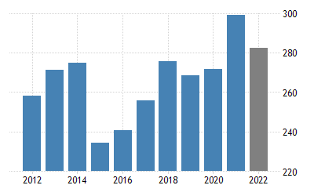

Vissza
Gazdasága:

- Általános adatok
-
Gazdasága: ipari ország. Finnország iparosított, nagyban szabadpiacú gazdasággal rendelkező ország, az egy főre eső bruttó hazai termék (GDP) majdnem annyi, mint Ausztriában és Hollandiában, és kevéssel meghaladja Németország és Belgium szintjét.
-
A Világgazdasági Fórum 2015-2016-os felmérése szerint a világ 8. legversenyképesebb országa. A finn életszínvonal magas, a GDP és adó hozzávetőleg ötödét egyedül a Nokia adja, amely így az ország stratégiai magánvállalata.
-
Gyors nyugat-európai integrációja során Finnország egyike volt annak a 11 országnak, amelyek bevezették az euró egységes pénznemet 2002. január 1-jén.
- Gazdasági ágazatok
-
A gazdaság összteljesítményének 70,2%-át a szolgáltatószektor adja. Ezt követi az ipar 27,1%-kal, ezen belül a fémipar, elektronika, gépipari berendezések, tudományos műszerek, hajóépítés, papírgyártás, élelmiszeripar, vegyipar, textil- és ruházati ipar. Leszámítva a fát és néhány ásványi kincset, Finnország nagyban függ a nyersanyag, energia és fontosabb élelmiszeri cikkek importjától.
- Külkereskedelem
- Export és Import termékek:
-
- Exporttermékek: műszaki berendezések és alkatrészek, vegyipari termékek, fémek, fa, papír, cellulóz. (Németország, Svédország, Egyesült Államok, Hollandia, Kína, Oroszország)
- Importtermékek: élelmiszer, kőolaj és olajszármazékok, vegyipari termékek, közlekedési eszközök, vas és acél, műanyagok, vetőmagok. (Németország, Svédország, Oroszország, Hollandia)
- Közlekedés
-
2016-ban a közúthálózat teljes hossza 104 161 kilométer volt, ebből 77 989 kilométer főút. Az autópályák teljes hossza 779 kilométer. Az úthálózat költségét a gépjárművekre és üzemanyagokra kivetett adókkal finanszírozzák.
-
2011-ben a vasúti hálózat hossza 5944 kilométer volt, ebből 3172 kilométernyi villamosított. 2011-ben az utasok összesen 68,3 milliószor utaztak vasúton, 3882 millió kilométert téve meg. Ugyanebben az évben a teherforgalomban 34,8 millió tonna árut fuvaroztak.